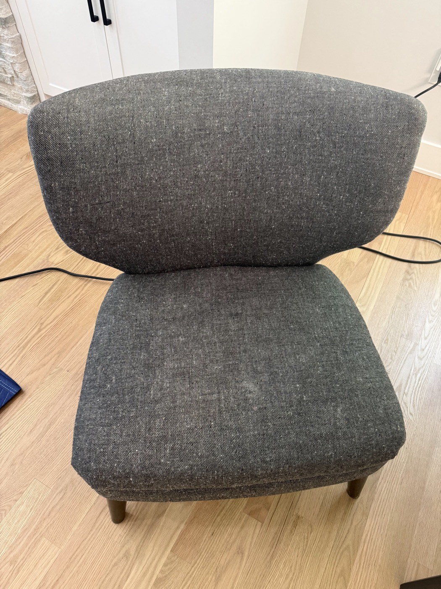

Professional Upholstery Cleaning
From everyday fabric chairs to detailed cushion work, BluePeak Cleaning Co. identifies the fabric type first, then applies the right cleaning method so your upholstery comes out refreshed without shrinking, fading, or watermarking.

What's Included in Our Upholstery Cleaning Service
Here is exactly what happens when BluePeak Cleaning Co. handles your upholstery cleaning.
- ✓ Fabric identification and a hidden-spot compatibility test
- ✓ Vacuuming to lift loose dirt and surface debris
- ✓ Spot pre-treatment for visible stains
- ✓ Low-moisture or hot water cleaning matched to the fabric
- ✓ Hand-detailing of seams, piping, and cushion edges
- ✓ Light deodorizing and a fast-dry finish
The BluePeak Difference
What sets our upholstery cleaning service apart.
Fabric-Specific Knowledge
We adjust our method, solution, and pressure based on the exact fabric, so delicate weaves are treated differently than heavy-duty upholstery.
Detail-Focused Hand Cleaning
Seams, piping, and tufted cushions get manual attention that machine-only passes miss.
Stain Removal Built In
Common stains and everyday spots are pre-treated as part of the service, not billed as an extra step.
Explore Our Other Services
BluePeak Cleaning Co. also offers the following services.
Ready to refresh your upholstered furniture?
Call BluePeak Cleaning Co. today for a free estimate.